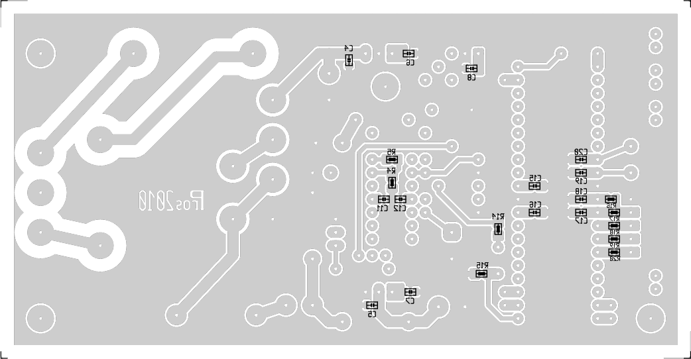

Dit project maakt gebruik van een boel LED's om muziek om te zetten in kleur. Voor het bepalen van de overheersende frequenties werd geen gebruik gemaakt van analoge filters. Het is een microcontroller (een ATmega32) die het omgevingsgeluid sampled, en op die samples een FFT-routine loslaat. Vier groepen LED's met elk een eigen kleur worden vervolgens aangestuurd via de PWM-uitgangen van de μC.
Het deel voor de positieve voedingsspanningen is traditioneel. Dat behoeft geen uitleg.
Bij de negatieve spanning hoort een verklaring:
C1, D5 en D6 vormen een diodepomp.
Als C1 ontladen is, en
de onderste aansluiting van Tr1 is negatief t.o.v. de bovenste,
wordt C3 negatief “opgeladen” via D6.
Zodra de onderste aansluiting van Tr1 positief wordt t.o.v. de
bovenste zal D6 sperren, en kan C1 zich ontladen via D5. R1 doet
daarbij dienst als stroombegrenzer.
We hadden het bij de voorstelling al over “omgevingsgeluid”. Daar hoort dus een microfoon bij. Een elektreet-microfoon is hier een logische keuze. De prijs is miniem, en de prestaties volstaan ruimschoots voor ons doel.
Vermits we minder belangstelling hebben voor het geluidsniveau,
maar des te meer voor het frequentiespectrum, willen we het
volume opkrikken tot een formaat waar de ADC-ingang van de μC
wat aan heeft, waarbij clipping vermeden moet worden.
Daarbij komen de LDR en D2 ons ter hulp.
N1 en N4 versterken het microfoonsignaal meer dan 500x. Dat
volstaat om ook het geluid in een rustige omgeving voldoende te
versterken.
Zodra iemand het geluid van de audio-installatie open draait (of
zelf luidkeels gaat zingen), is die versterking te hoog. Op dit
ogenblik snellen N2 en N3 ter hulp.
Naarmate de topspanning op de uitgang van N4 stijgt, wordt C13
verder opgeladen (en langzaam terug ontladen door R11). N3 en T1
zorgen er voor, dat die spanning ook op de anode van D2 komt te
staan1.
Met behulp van P1 kan nu ingesteld worden bij welk geluidsniveau
D2 in geleiding moet gaan. En dan gebeurt het volgende...
De LDR, die in een lichtdichte behuizing zit, heeft een hoge
weerstand zolang D2 gedoofd is - zijn invloed valt dan te
verwaarlozen.
Zodra D2 oplicht, neemt de weerstand van de LDR af, en zal hij
met R7 een spanningsdeler vormen. De ingangsspanning van N4
wordt bijgevolg afgeknepen, zodat ook zijn uitgangsspanning binnen
de perken blijft.
Het laatste stuk is voor de μC.
De meeste pinnen van deze rakker blijven onbenut. Het moge zonde
zijn, maar het was in de eerste plaats omwille van zijn 2k RAM
dat er voor een ATmega32 gekozen is.
Zoals het schema toont, stuurt de μC vier kringen LED's, elk
met een eigen kleur. In de praktijk bestaat elke kring uit 3
parallelschakelingen van elk drie LED's die in serie staan, ieder
met hun eigen weerstand op de LED-print.
Ook op de stuurprint is mogelijkheid voorzien om (2) serieweerstanden
aan te brengen.
Wat niet in het schema terug te vinden is, zijn 4 weerstanden en een connector om de μC te kunnen programmeren.
Hier de broncode voor de ATmega32
Bij het debuggen kan wat UART-communicatie handig zijn. Er dient
dan wel een externe MA232 gebruikt te worden.
Hier de UART-broncode
De FFT-routines zijn niet van mijn hand. Ik heb ze schaamteloos
hier vandaan gehaald.
Ik heb wel de default-ingestelde buffergrootte (FFT_N in fft.h) van 256
naar 128 moeten terugbrengen teneinde wat snelheidswinst te
boeken. Verder is er niets aan gewijzigd.
De componentenzijde
De bijbehorende componentenopstelling.
De LDR wordt bovenop D2/D2' geplaatst, met de gevoelige
zijde tegen de LED's aan.
Even opletten met P1! Het gat van diens middenste pootje moet
doogemetalliseerd worden. Ik heb het met een Bungard-busje
gedaan, maar met enkele dunne draadjes ―vezeltjes uit een
soepele draad― die eerst bovenaan vastgesoldeerd worden moet
het ook lukken.
De soldeerzijde, van bovenaf bekeken.

De componentenopstelling, van boven bekeken.
Idem, maar nu van onder bekeken.
De layout is ook beschikbaar in pdf-formaat op de juiste grootte. Zowel boven- als onderzijde kunnen zondermeer afgedrukt worden op kalkpapier of transparante folie, waarna deze kan gebruikt worden om de print te belichten met de bedrukte zijde tegen de print aangedrukt.
Het afgewerkte printje, van bovenaf gezien.
De onderkant.
Een kort filmpje, om een idee te geven van het resultaat.